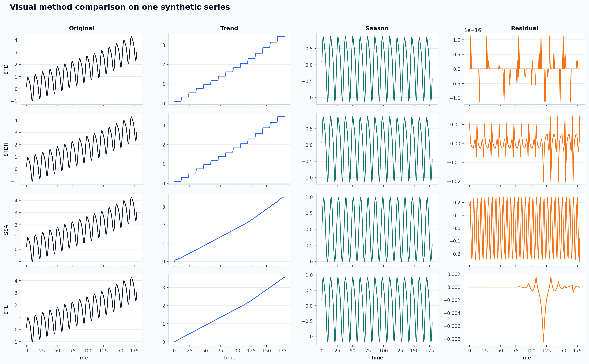
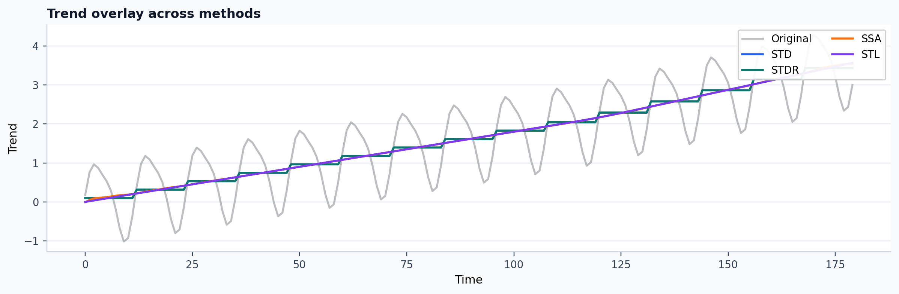
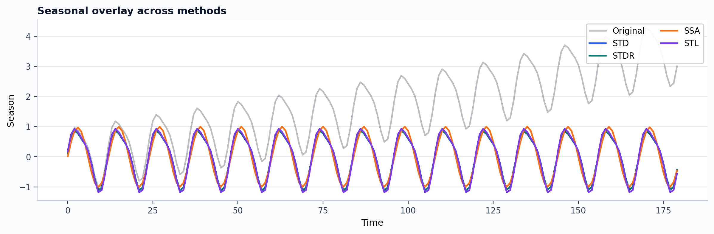

Visual tutorial: compare methods on the same series
This tutorial is for the question: "which decomposition is behaving qualitatively better on this signal?"
Goal
Run several methods on the same series and compare:
- their full decomposition panels,
- their trend estimates,
- their seasonal estimates.
Script
POSIX shell:
PYTHONPATH=src python examples/visual_method_comparison.py \
--out-dir out/visual_method_comparison
PowerShell:
$env:PYTHONPATH='src'
python examples/visual_method_comparison.py --out-dir out/visual_method_comparison
This script compares:
STDSTDRSSASTL
Published raw stdout:
Output files
The script writes:
out/visual_method_comparison/method_grid.pngout/visual_method_comparison/trend_overlay.pngout/visual_method_comparison/season_overlay.pngout/visual_method_comparison/comparison_summary.csv
Published experiment record:
Published summary from the current docs build:
| Method | Backend | Trend std | Seasonal std | Residual RMS | Reconstruction error |
|---|---|---|---|---|---|
STD |
native |
1.0123 | 0.6723 | 0.0000 | 0.0000 |
STDR |
native |
1.0123 | 0.6723 | 0.0056 | 0.0000 |
SSA |
native |
1.0129 | 0.7052 | 0.1766 | 0.0000 |
STL |
python |
1.0149 | 0.7289 | 0.0012 | 0.0000 |
Published example outputs:



How to read the figures
These values come from one actual local run of the published script. The table is useful because it keeps the figure interpretation grounded in recorded numbers rather than only visual preference.
method_grid.png is the broadest comparison:
- each row is one method,
- columns show original, trend, season, and residual,
- use it to see where one method is over-smoothing or leaking seasonality into the trend.
trend_overlay.png is the fastest high-level diagnostic:
- if one method has a much more jagged trend than the others, it is probably retaining seasonal energy in the trend,
- if one method is too flat, it may be over-suppressing meaningful drift.
season_overlay.png helps you judge:
- amplitude consistency,
- phase alignment,
- whether a method is inventing oscillation where the others agree there is little structure.
Suggested experimental pattern
Use this workflow when choosing defaults:
- Start with 3 to 4 methods, not 10.
- Inspect trend overlay first.
- Inspect residual structure next.
- Only then decide which method deserves benchmarking on a larger sweep.
This prevents spending hours benchmarking methods that already look wrong by inspection.